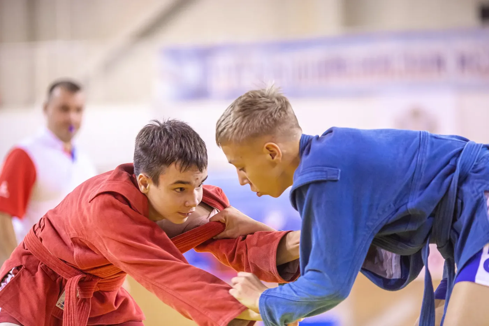
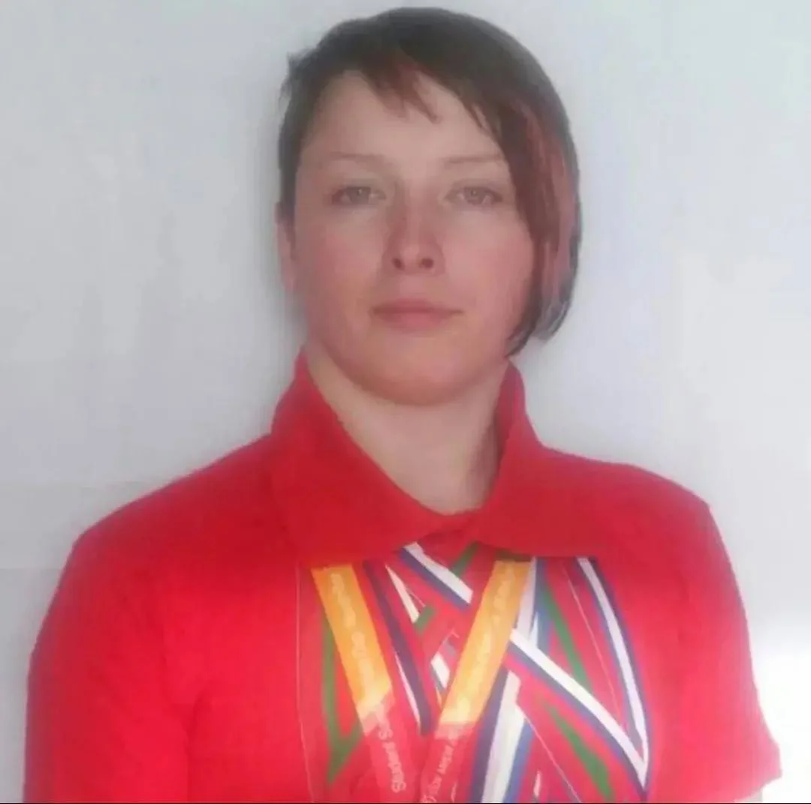
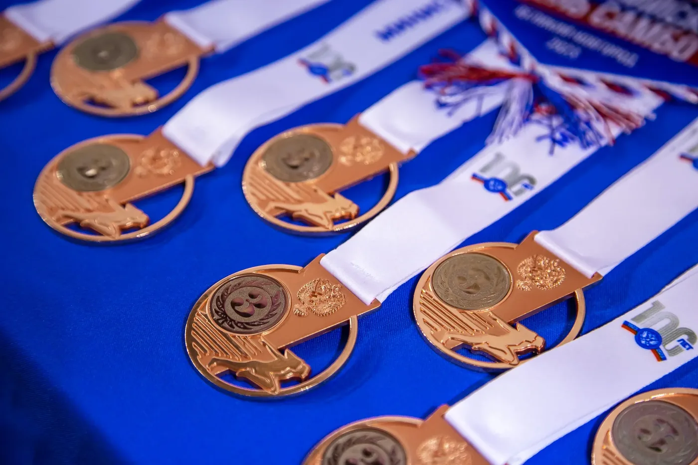
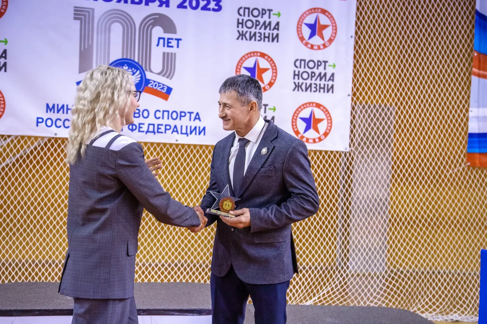

Новгородской области

Соревнования, подготовка тренеров и судей. Календарь, положения и отчёты — здесь. Тренировки — в клубах федерации.
Календарный план федерации на 2026 год. Положения и отчёты — в архиве соревнований.
Все соревнования и архивФедерация не проводит тренировки. Занятия ведут клубы и тренеры федерации: выберите клуб и напишите в его группу ВКонтакте.
Объединяет тренеров федерации, проводит тренировки по дзюдо и самбо для детей и взрослых.
Тренеры федерации. Клуб, в котором тренирует каждый, указан в карточке.




Федерация самбо Новгородской области с 2013 года развивает самбо в регионе: проводит соревнования, мастер-классы и показательные выступления, готовит тренеров и судей.




